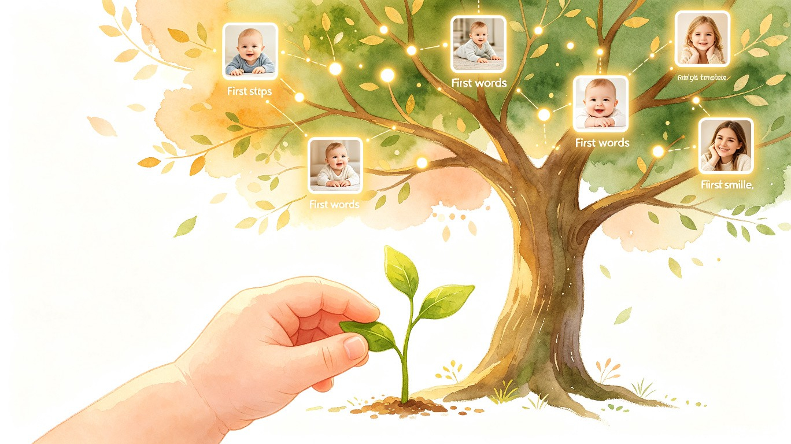
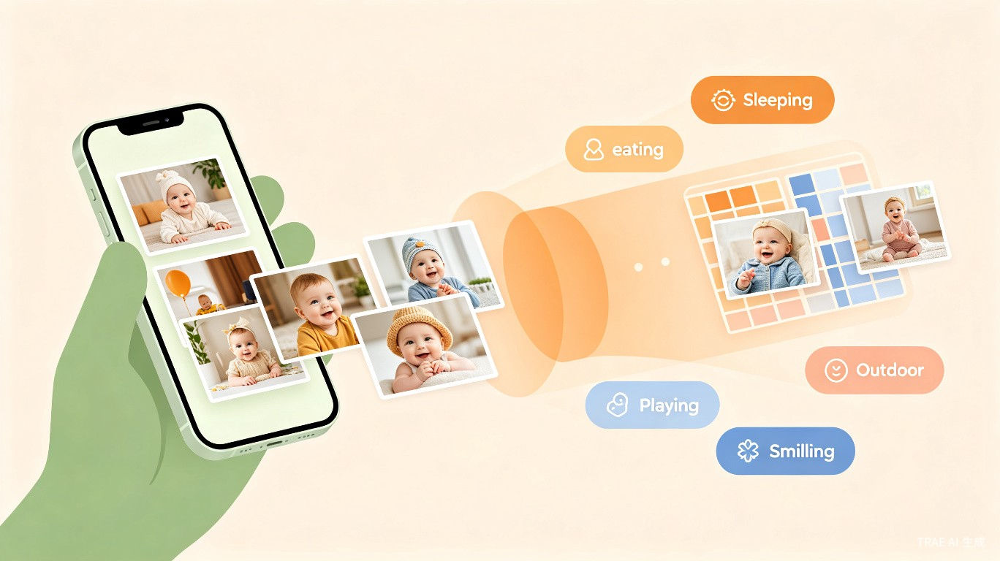

中国育儿应用市场2025年规模已达128.6亿元，同比增长19.3%，增速显著高于移动互联网整体水平[1]。全球育儿应用市场预计2026年达12.8亿美元，2035年达68亿美元，年复合增长率20.37%[2]。亚太地区是全球增长最快的区域，占全球增长的34.9%[2]。超过71%的婴儿父母已在使用至少一款宝宝追踪应用[2]。
国家卫健委数据显示，2025年新生儿家庭平均安装7.2款母婴软件，但68%的新手爸妈存在"信息过载"焦虑[3]。在照片记录领域，核心痛点集中在三个方面：
照片、视频、里程碑事件散落在微信、手机相册、不同APP中，缺乏统一的成长档案。家长想回顾宝宝"第一次翻身"时，往往翻找半天。
带娃已经很累，手动分类、打标签、整理时间线需要大量时间和精力。现有工具的AI能力有限，大多仍依赖手动操作。
现有工具以时间线为主，冰冷且同质化。家长缺少一种有温度的方式，将零散的照片串联成有意义的成长故事。
AI照片分类（CLIP零样本分类）、婴儿姿态估计（ViTPose精度已达专家水平[6]）、端到端加密存储（Ente Photos开源方案[7]）等关键技术已成熟，为打造下一代宝宝记录产品提供了技术基础。2025年全球36%的育儿APP已集成AI分析功能[2]，但AI在照片自动分类和里程碑检测方面的应用仍处于早期阶段。
核心判断：所有竞品按"时间"整理照片，没有一个按"成长阶段"整理。AI发育阶段分类是一个竞品都没有做到的事——上传即归类到发育阶段，想找"第一次翻身"直接点"翻身篇"，AI已筛选好。以"AI发育阶段引擎"为核心差异化，聚焦做好一件事：帮父母轻松记录和分类宝宝照片。
90后/95后，一二线城市，重视科学育儿，手机不离手，每天拍大量宝宝照片但没时间整理。愿意为"省时省力"付费。
希望参与宝宝成长记录，但经常忘记或嫌麻烦。需要极低门槛的上传方式，以及被"提醒"的温和机制。
想随时看孙子/孙女的近况，但技术能力有限。需要极简的查看界面，不需要上传功能。
| 场景 | 用户 | 行为描述 | 频率 |
|---|---|---|---|
| 日常记录 | 妈妈/爸爸 | 拍完宝宝照片后，一键批量上传到成长树，AI自动分类归档，无需手动操作 | 每天1-3次 |
| 里程碑捕获 | 妈妈 | 宝宝第一次翻身/坐/走时，拍照或录像上传。AI检测到疑似里程碑行为，弹出轻量提示确认 | 阶段性 |
| 成长回顾 | 全家 | 打开APP查看成长树，点击某个分叉节点回顾该阶段的照片和视频 | 每周2-3次 |
| 家庭共享 | 祖辈 | 收到推送通知"宝宝今天会叫妈妈了"，打开APP查看照片和视频 | 每天1次 |
| 时光纪念 | 妈妈 | 宝宝满月/半岁/一岁时，一键生成成长回顾影集或视频，分享给家人 | 阶段性 |
| 维度 | 亲宝宝 | 宝宝树 | 时光小屋 | 网易亲时光 |
|---|---|---|---|---|
| 定位 | 全家成长相册 + 科学育儿平台 | 综合母婴社区 + 全周期育儿工具 | 专注家庭共享的云存储记录工具 | 轻量级宝宝相册 |
| 用户规模 | 注册超1亿，服务家庭超5000万 | 月活800万-1800万（持续下滑） | 数千万（全球） | 小体量 |
| AI能力 | AI育儿助手、AI婴儿看护、AI修复老照片 | AI Agent"米卡AI"、DeepSeek融合 | 自然语言搜索 | 有限 |
| 照片功能 | 时间轴整理、AI生成影集/MV | 工具链分散，非核心优势 | 自动整理、实体书印刷 | 智能排序、全家共享 |
| 隐私安全 | 2025年因隐私违规被国家通报 | 隐私合规问题频发 | 未突出隐私特性 | 加密私有云 |
| 付费模式 | VIP年卡298元，被质疑"割韭菜" | 广告+电商导购 | 年度VIP 188元 | VIP订阅 |
| 核心痛点 | 收费不合理、隐私违规、电商质量差 | 用户流失、内容同质化、已退市 | AI能力弱、多孩需分别付费 | 功能单一 |
深入分析所有竞品后发现，它们有一个共同的盲区：所有产品都按"时间"整理照片，没有一个按"成长阶段"整理。亲宝宝是时间线、时光小屋是时间线、网易亲时光也是时间线。家长想找"宝宝第一次翻身"的视频，只能凭记忆去翻某个大概的时间段。
核心差异化机会：AI理解宝宝的成长阶段，按阶段自动分类照片。这不是简单的打标签，而是一个"发育阶段引擎"——AI内置婴儿发育知识体系，知道3个月的宝宝在练翻身、6个月在练坐、9个月在练爬。上传照片后，AI结合宝宝月龄+照片内容，自动归入对应阶段。家长不是在翻时间线，而是在翻"成长故事"。
竞品：1月1日、1月15日、2月3日...碎片化的日期流。我们：俯卧抬头篇、翻身篇、独坐篇、爬行篇、学步篇...有章节的成长故事。这是本质区别。
竞品：凭记忆翻时间线，大海捞针。我们：点"翻身篇"，AI已筛选好该阶段所有照片，按时间排序，第一条就是最早的——大概率就是第一次。
竞品的AI在做聊天问答、看护硬件、修复老照片——和照片管理无关。我们的AI直接理解照片内容，并归类到发育阶段，是照片管理的核心能力。
亲宝宝、宝宝树均因隐私问题被监管通报。在"按阶段分类"这个核心差异化之上，隐私保护是锦上添花的信任壁垒，不是唯一卖点。
一句话定位：第一款真正理解宝宝成长的智能相册 —— AI按发育阶段自动归类照片，想找"第一次翻身"直接点"翻身篇"。
所有竞品（亲宝宝、时光小屋、网易亲时光）无一例外都按时间线整理照片。我们的本质区别在于：按成长阶段整理。
| 对比维度 | 亲宝宝 / 时光小屋 | 宝贝成长树 |
|---|---|---|
| 照片组织方式 | 按日期时间线（1月1日、1月15日...） | 按成长阶段（翻身篇、独坐篇、爬行篇...） |
| 找"第一次翻身" | 凭记忆翻时间线 | 点"翻身篇"，AI已筛选好，第一条就是第一次 |
| 浏览体验 | 碎片化的日期流 | 有章节的成长故事 |
| AI的角色 | 聊天问答 / 看护硬件 | 理解照片内容并归类到发育阶段 |
| 用户的感受 | "我在整理照片" | "我在看宝宝长大的故事" |
批量上传照片/视频，AI结合宝宝月龄+照片内容，自动归入对应发育阶段。家长只需"上传"，不需要手动打标签、选分类、排时间。
打开APP看到的是"翻身篇"、"独坐篇"、"爬行篇"...点击任意阶段，该阶段所有照片按时间排列，第一条就是最早的——大概率就是"第一次"。
成长树不是装饰性的可视化，而是发育阶段引擎的自然呈现。树的每个分叉不是家长手动标记的，而是AI检测到宝宝进入新阶段后自动生长出来的。
端到端加密、数据完全归属用户。不卖广告、不卖数据、导出自己的照片永远免费。在核心差异化之上，隐私保护是信任壁垒。
聚焦是最大的竞争力。MVP阶段只做三件事，把每一件做到极致：
以下方向不在MVP范围内，验证核心价值后再考虑：
| # | 功能模块 | 优先级 | 功能描述 |
|---|---|---|---|
| 1 | AI发育阶段归类 | P0 | AI内置婴儿发育时间线（基于WHO指南），预定义主要阶段：俯卧抬头(0-3月) → 翻身(3-5月) → 独坐(5-7月) → 爬行(7-10月) → 扶站(9-11月) → 独走(11-14月) → 语言爆发(12-18月)。每张照片上传后，AI根据宝宝当前月龄+图像内容，自动归入对应阶段。同一阶段内照片按时间排序，第一条就是该阶段的"第一次"。 |
| 2 | 智能上传 | P0 | 支持批量选择照片/视频上传，支持后台自动备份手机相册中宝宝相关照片。上传后AI自动完成发育阶段归类，家长无需任何手动操作。支持实况照片（Live Photo）和视频的完整上传与存储。 |
| 3 | 按阶段浏览 | P0 | APP主页以成长树形式展示发育阶段。每个分叉代表一个新阶段的开始，点击任意阶段"钻入"查看该阶段的所有照片和视频。照片按时间排序，第一条标注为"第一次"。支持在阶段内快速跳转到"第一次翻身"、"第一次坐"等关键节点。 |
| 4 | 里程碑"第一次"自动标记 | P0 | 每个发育阶段内，AI自动将该阶段最早的照片标记为"第一次"（如翻身篇的第一张标记为"第一次翻身"）。家长可以确认或修改。AI从照片/视频中检测疑似里程碑行为时，以轻量弹窗提示家长确认。 |
| 5 | 成长树可视化 | P0 | 以可视化成长树为APP主页。树干代表发育时间线，每个分叉代表一个新发育阶段的开始（由AI自动检测触发），枝叶代表该阶段的日常照片。支持缩放、点击分叉节点查看阶段详情、四季主题随月龄变化。树的生长是阶段引擎的自然呈现。 |
| 6 | 家庭共享 | P0 | 支持邀请家庭成员（父母、祖辈）加入宝宝的成长树。角色分为：管理员（上传+管理）、记录者（上传+查看）、查看者（仅查看）。支持推送通知新动态（如"宝宝进入爬行阶段了"）。 |
以下功能全部推迟到MVP验证之后：语音备注、时光回顾影集、智能搜索、成长数据记录（身高体重）、多孩管理、实物周边。不是这些功能不好，而是在验证"AI发育阶段归类"这个核心假设之前，每多一个功能都是对精力的分散。
flowchart TD
A[打开APP] --> B[成长树主页]
B --> C{用户操作}
C -->|上传照片| D[批量选择/拍照]
C -->|按阶段浏览| E[点击分叉节点]
C -->|找第一次| F[点击阶段内"第一次"标记]
C -->|家庭动态| G[动态消息页]
D --> H[AI发育阶段归类]
H --> I{检测到新阶段?}
I -->|是| J[提示: 宝宝好像进入翻身期了]
I -->|否| K[自动归档到当前阶段]
J -->|确认| L[树生长新分叉]
J -->|忽略| K
K --> M[阶段内枝叶更新]
L --> M
E --> N[查看该阶段所有照片/视频]
F --> O[直接定位到该阶段最早的照片]
成长树不是装饰性的可视化，而是发育阶段引擎的展示层。它需要同时满足三个目标：情感共鸣（每次打开都感受到宝宝又长大了一点）、信息导航（按阶段快速找到特定照片）、阶段引擎的可视化（每个分叉都是AI检测到新阶段后自动生长的）。
| 树的元素 | 对应含义 | 视觉表现 | 交互方式 |
|---|---|---|---|
| 种子/根 | 宝宝出生 | 一颗小种子，配有出生日期和第一张照片 | 点击查看出生记录 |
| 树干 | 发育时间线（按月龄） | 从下往上生长的主干，粗细随时间递增 | 上下滚动浏览不同月龄 |
| 分叉节点 | 发育阶段切换 | 金色节点，标注阶段名称（"翻身篇"、"独坐篇"），由AI自动检测触发 | 点击"钻入"该阶段，查看所有照片 |
| 枝叶 | 该阶段的日常照片/视频 | 绿色叶片，含照片缩略图，密度反映记录频率 | 点击查看照片详情 |
| 果实 | "第一次"标记 | 金色果实，如"第一次翻身"、"第一次叫妈妈"，标注在阶段内最早的照片上 | 点击直接定位到该照片 |
| 四季背景 | 宝宝月龄阶段 | 0-3月春天（嫩绿）、4-6月夏天（深绿）、7-9月秋天（金黄）、10-12月冬天（暖棕） | 随宝宝月龄自动切换 |
树的生长完全由AI发育阶段引擎驱动，而非家长手动操作：
树越长越大是必然趋势，需要从设计层面避免后期视觉混乱：
每次上传新照片时，对应的枝叶区域会有微妙的生长动画（新叶展开、枝条延伸），给用户"树在长大"的即时反馈。里程碑确认时，触发分叉生长动画，配合柔和的音效和金色光效。

这是整个产品的技术核心，也是唯一的差异化壁垒。AI发育阶段引擎做的事情很简单：根据宝宝月龄+照片内容，判断这张照片属于哪个发育阶段。
AI内置基于WHO儿科学指南的发育时间线，预定义0-18个月的主要发育阶段：
| 阶段 | 月龄范围 | 核心行为特征 | AI识别线索 |
|---|---|---|---|
| 俯卧抬头 | 0-3月 | 趴着时能抬起头部 | 宝宝趴姿、头部抬起姿态 |
| 翻身 | 3-5月 | 从仰卧翻到俯卧，或反向 | 宝宝侧身/翻转姿态、床面/地垫场景 |
| 独坐 | 5-7月 | 不用支撑独立坐稳 | 宝宝坐姿、无扶手支撑 |
| 爬行 | 7-10月 | 四肢协调爬行 | 宝宝四肢着地姿态、低角度拍摄 |
| 扶站 | 9-11月 | 扶着家具站立 | 宝宝站立姿态、手扶物体 |
| 独走 | 11-14月 | 独立行走 | 宝宝直立行走姿态、户外/室内场景 |
| 语言爆发 | 12-18月 | 开始说有意义的词语 | 宝宝张嘴说话、与大人互动 |
flowchart LR
subgraph 输入
A[照片/视频]
B[宝宝出生日期]
end
subgraph AI处理
C[计算宝宝当前月龄]
D[CLIP内容识别]
E[ViTPose姿态估计]
C --> F[匹配发育阶段窗口]
D --> F
E --> F
F --> G[阶段归类结果]
G --> H{新阶段?}
end
subgraph 输出
H -->|是| I[提示确认 + 树生长分叉]
H -->|否| J[归档到当前阶段]
I --> K[标记"第一次"]
J --> K
end
阶段归类不是单纯的图像分类，而是宝宝月龄+图像内容+发育知识的三重推理：
根据宝宝出生日期计算当前月龄，只匹配该月龄对应的发育阶段窗口。如5个月的宝宝只匹配"翻身"和"独坐"两个候选阶段，不会误判为"爬行"。
CLIP零样本分类识别照片内容（宝宝趴着/坐着/站着/爬着），ViTPose姿态估计从视频中提取宝宝骨骼姿态，两者交叉验证提高准确率。
内置WHO发育里程碑知识，知道各阶段的典型行为和过渡期。如5个月大的宝宝出现坐姿，概率是"独坐"而非"扶站"。
当AI检测到宝宝可能进入新阶段时，以轻量弹窗提示家长确认："宝宝好像能坐了？这是翻身篇还是独坐篇？"家长一键确认或忽略。
这是用户最关心的功能。逻辑非常简单：
| 引擎 | 技术方案 | 负责能力 | 特点 |
|---|---|---|---|
| CLIP零样本分类 | OpenCLIP ViT-L/14 | 照片内容识别：宝宝趴着/坐着/站着/爬着 | 无需训练，通过文本描述识别任意姿态类别，速度快 |
| ViTPose姿态估计 | ViTPose（婴儿微调） | 视频姿态分析：从视频中提取宝宝骨骼关节位置 | 婴儿姿态估计精度最高的方案[6] |
| 发育知识库 | 规则引擎 + WHO指南 | 月龄-阶段映射、过渡期判断、阶段窗口过滤 | 确定性强，不依赖AI黑盒 |
| 人脸识别 | dlib/face_recognition | 人物标签：宝宝/爸爸/妈妈/祖辈 | 辅助判断照片中是否有宝宝 |
| 能力 | MVP目标 | Beta目标 | GA目标 |
|---|---|---|---|
| 发育阶段归类准确率 | ≥ 80% | ≥ 88% | ≥ 92% |
| "第一次"标记准确率 | ≥ 70% | ≥ 82% | ≥ 90% |
| 新阶段检测召回率 | ≥ 50%（半自动） | ≥ 65% | ≥ 80% |
| 新阶段检测精确率 | ≥ 60% | ≥ 75% | ≥ 85% |
| 误报率（错误提示新阶段） | ≤ 20% | ≤ 12% | ≤ 8% |
| 用户修改归类比例 | ≤ 20% | ≤ 12% | ≤ 8% |
核心理念：隐私不是功能，是信仰。宝宝的数据只属于宝宝和家人。我们不收集、不出售、不滥用任何用户数据。
参考Ente Photos的开源端到端加密架构[7]，采用三层密钥体系：
| 加密层级 | 密钥类型 | 加密对象 | 技术细节 |
|---|---|---|---|
| 第一层 | masterKey | 派生所有下级密钥 | 用户密码通过Argon2id派生，永不离开设备 |
| 第二层 | collectionKey | 相册/文件夹的元数据 | 每个宝宝的成长树一个独立collection |
| 第三层 | fileKey | 单个文件和元数据 | 每张照片/视频独立加密，XChaCha20-Poly1305 |
中国《个人信息保护法》要求处理不满14周岁未成年人个人信息时，必须制定专门的个人信息处理规则，并获取监护人单独同意[9]。2025年"护童计划"已制定发布10多项儿童隐私保护标准[10]。具体措施：
参考Life360的成功模式[11]（月活9580万，付费280万，ARPPC 136.63美元/年），采用免费基础功能获客 + 高级功能付费转化的策略。核心原则：基础阶段归类永远免费，导出自己的照片永远免费。
| 功能 | 免费版 | 成长会员（¥168/年） |
|---|---|---|
| AI发育阶段归类 | 基础阶段（7个） | 精细阶段（15+）+ 自定义阶段 |
| "第一次"自动标记 | 自动标记 | 自动标记 + AI视频分析增强 |
| 成长树可视化 | 完整功能 | 完整功能 |
| 照片/视频上传 | 5GB云端存储 | 100GB云端存储 |
| 家庭共享 | 最多2人 | 最多10人 |
| 实况照片 | 仅静态图 | 完整实况照片支持 |
| 智能搜索 | 阶段内浏览 | 自然语言跨阶段搜索 |
| 时光回顾影集 | 基础模板 | 高级模板 + 自定义音乐 |
| 端到端加密 | 标准加密 | 增强加密 + 本地优先模式 |
| 数据导出 | 完整导出（免费） | 完整导出（免费） |
| 广告 | 无 | 无 |
定价逻辑：¥168/年（约¥14/月）低于亲宝宝（¥248-298/年）和时光小屋（¥188/年），但提供更丰富的AI功能。以"合理定价+无广告+数据自由"赢得用户信任，避免亲宝宝的"割韭菜"教训。
AI发育阶段归类（7个基础阶段）+ 智能上传 + 按阶段浏览 + "第一次"自动标记 + 成长树可视化 + 家庭共享（2人）。目标：验证"按成长阶段归类照片"这个核心假设是否真正打动用户，阶段归类准确率≥80%。
AI精细阶段归类（15+阶段）+ ViTPose视频姿态分析 + 智能搜索 + 时光回顾影集 + 家庭共享扩展至10人 + 实况照片完整支持。目标：阶段归类准确率≥88%，7日留存率≥40%。
Freemium付费体系上线 + 多孩管理 + 端到端加密增强 + 本地优先存储模式 + 成长数据记录（身高体重曲线）。目标：付费转化率≥5%，月活突破50万。
AI阶段引擎持续优化（用户数据反馈循环）+ Apple Watch/Android Wear快捷上传 + 与儿科医生/早教机构合作（发育报告）+ 实物周边（成长树画册）+ 国际化。目标：成为"按成长阶段归类照片"品类的定义者。
周活跃记录家庭数 — 每周至少有一次上传行为的家庭数量。这个指标直接反映产品的核心价值交付：用户是否在持续使用AI发育阶段归类来记录宝宝成长。
| 层次 | 指标 | MVP目标 | 观察周期 |
|---|---|---|---|
| 增长 | 新增注册用户 | 10万/月 | 月 |
| 自然流量占比 | ≥ 40% | 月 | |
| 家庭邀请转化率 | ≥ 30% | 周 | |
| 留存 | 次日留存率 | ≥ 55% | 日 |
| 7日留存率 | ≥ 35% | 周 | |
| 30日留存率 | ≥ 20% | 月 | |
| 活跃 | DAU / MAU | ≥ 25% | 月 |
| 人均日上传照片数 | ≥ 3张 | 日 | |
| 人均日使用时长 | ≥ 5分钟 | 日 | |
| AI质量 | 发育阶段归类准确率 | ≥ 80% | 周 |
| 新阶段检测召回率 | ≥ 50% | 月 | |
| 用户修改归类比例 | ≤ 20% | 周 | |
| 商业 | 付费转化率 | ≥ 5% | 月 |
| 月均ARPU | ≥ ¥12 | 月 |
| 风险 | 概率 | 影响 | 应对策略 |
|---|---|---|---|
| AI发育阶段归类准确率不达标 | 中 | 高 | MVP阶段采用半自动模式，允许用户修改归类结果。持续收集用户修正数据，迭代模型。设置准确率阈值，低于阈值时回退到按时间归类。 |
| 新阶段检测误报过多 | 高 | 中 | 采用"低频提示"策略：同一阶段类型每周最多提示1次。提示文案温和，不制造焦虑。用户连续忽略3次后自动降低该类型提示频率。 |
| 隐私合规风险 | 低 | 极高 | 从设计阶段嵌入合规要求，聘请外部法律顾问审核。参考Ente Photos已通过密码学审计的方案。定期进行合规自查。 |
| 云端存储成本过高 | 中 | 中 | 免费版限制5GB存储。采用分级存储策略：热数据（近3个月）高速存储，冷数据（超过1年）低成本归档。支持本地优先模式，减少云端压力。 |
| 用户增长缓慢 | 中 | 高 | 聚焦口碑传播：时光回顾影集的"分享给家人"功能自带传播属性。与母婴KOL合作，以"隐私安全"为差异化卖点。考虑与产科医院/月子中心合作推广。 |
| 大厂跟进复制 | 中 | 高 | 建立AI模型数据壁垒（用户修正数据持续优化阶段归类准确率）。"按成长阶段归类"的品牌认知和用户习惯难以快速复制。发育知识库+用户反馈数据构成双重壁垒。 |
| 实况照片兼容性问题 | 中 | 低 | iOS和Android的实况照片格式不同，服务端统一转码。MVP阶段优先支持iOS（Live Photo占比更高），Android后续迭代。 |